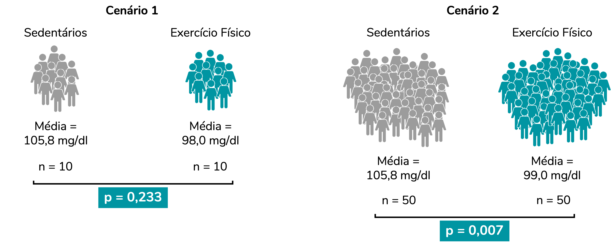
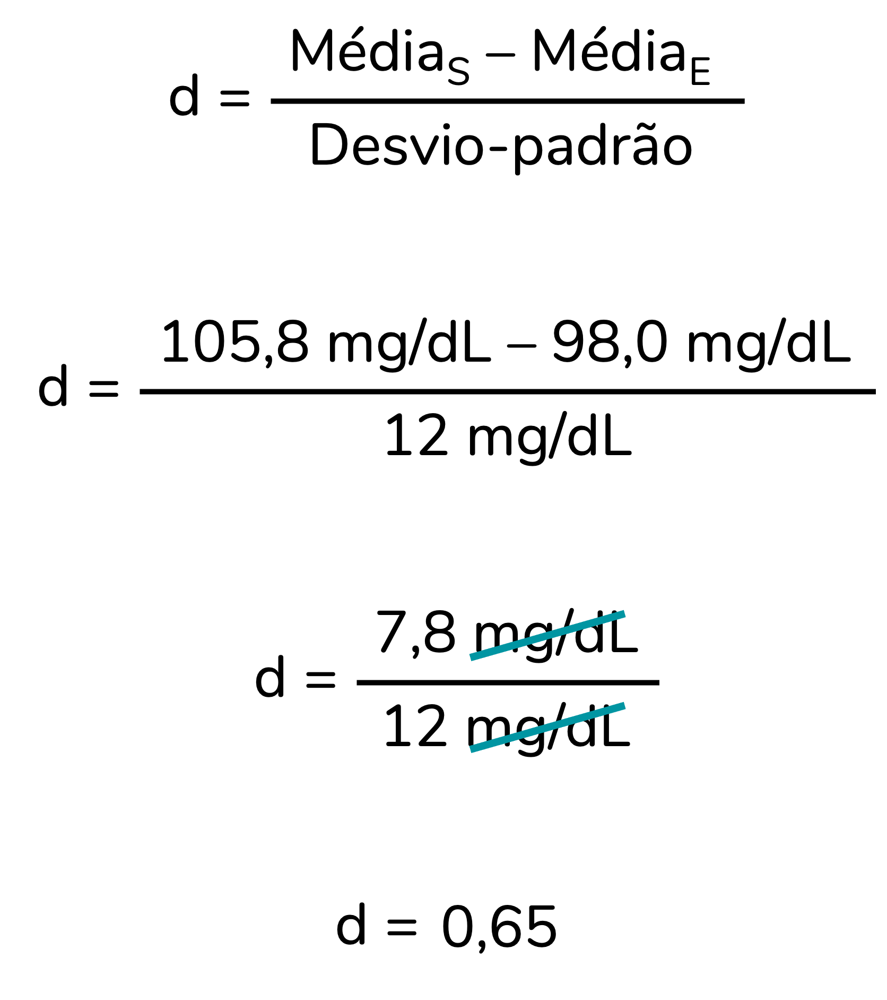

A resposta resumida à pergunta que abre o post é: tamanhos de efeito são medidas que refletem a magnitude do efeito detectado (por exemplo, a magnitude da diferença entre dois grupos). Mas, para que isso faça mais sentido e você entenda o porquê você deveria calculá-los na sua pesquisa, eu vou ter que partir para um exemplo…
O problema de pesquisa
Imagine que você quer investigar se a glicemia de pessoas que praticam exercício físico regularmente difere da glicemia de pessoas sedentárias. Para isso, você recruta pessoas que se encaixam nesses critérios, dosa suas glicemias e chega nos resultados abaixo:
Se calcularmos as médias, perceberemos que, para essa amostra de pessoas, a média de glicemia das pessoas sedentárias é de 105,8 mg/dL e a das pessoas que praticam exercício é de 98,0 mg/dL. Portanto, na amostra investigada, pessoas que praticam exercício físico aprensentam uma média de glicemia menor que a de pessoas sedentárias. Há uma diferença de 7,8 mg/dL entre os grupos.
Mas aqui precisamos entender algo importante: estamos analisando uma amostra de pessoas. Ao compararmos numericamente essas médias (98,0 é menor que 105,8) podemos afirmar apenas que as médias diferem nesta amostra.
No entanto, em geral, quando investigamos uma amostra, estamos querendo chegar a uma conclusão sobre a população. Ou seja, nesse caso queremos responder à pergunta: pessoas que praticam exercícios físicos regularmente têm uma média de glicemia diferente da média de pessoas sedentárias? Perceba que o nosso objetivo é extrapolar esses achados para todas as pessoas que praticam exercícios regulares e todas as pessoas sedentárias – essas pessoas compõem a nossa população. E, provavelmente, as médias dessa população não serão idênticas às médias obtidas na amostra.
Podemos usar a inferência estatística fazer essa extrapolação e avaliar se, na população, é esperado que os valores de glicemia difiram entre esses grupos. É aí que entram os testes de hipóteses. Nesse caso, como queremos comparar as médias de dois grupos independentes – isso é, compostos por pessoas diferentes – podemos usar um teste chamado teste-t independente.
Esse é um post focado em discutir tamanho de efeito. Portanto, eu vou assumir que você tem alguma familiaridade com os conceitos de população, amostra, testes de hipóteses e valor de p.
Caso queira uma explicação mais detalhada sobre população e amostra, recomendo esse post.
Para entender a fundo o que é valor de p, recomendo essa série de posts aqui do blog (que devem ser lidos nessa ordem): “Uma doutora toma chá”, “Valor de p, nível de significância e testes uni vs. bicaudais” e “Falácias do valor de p”.
O teste-t independente vai gerar um valor de p. E esse valor de p é a base da nossa decisão: rejeitar ou não a hipótese nula. Nesse caso, considerar ou não que esses grupos diferem na população. Usando aqui o ponto de corte (nível de sigificância) padrão de 0,05, poderíamos esquematizas a nossa decisão da seguinte forma:

Reforço: o foco desse post não é discutir testes de hipóteses, valor de p e essa tomada de decisão. Mas isso está bem detalhado aqui.
Podemos rodar um teste-t independente com esses dados. Vou rodá-lo pelo R, mas se você não tem familiaridade com esse software, não se preocupe. O que vamos discutir se aplica à análise realizada em qualquer software.
t.test(Glicemia ~ Grupo, data = dados, var.equal = T)
##
## Two Sample t-test
##
## data: Glicemia by Grupo
## t = -1.233, df = 18, p-value = 0.2334
## alternative hypothesis: true difference in means between group Exercício físico and group Sedentário is not equal to 0
## 95 percent confidence interval:
## -21.09035 5.49035
## sample estimates:
## mean in group Exercício físico mean in group Sedentário
## 98.0 105.8
Perceba que o valor de p (p-value) foi igual a 0,233. Ou seja, um valor de p maior que o nosso ponto de corte de 0,05. Nossa tomada de decisão aqui seria a de não rejeitar a H0. Portanto, consideraríamos que os grupos não diferem estatisticamente.
No entanto, o valor de p apresenta limitações importantes, que têm sido alvo de críticas fervorosas nas últimas décadas (Cohen, 1994; Sullivan; Feinn, 2012; Zhu, 2012). Uma dessas limitações é não representar adequadamente a magnitude do efeito detectado.
É comum a gente considerar que quanto menor o valor de p, maior o efeito observado – no nosso exemplo, pensaríamos “mais diferentes os grupos são”. Mas esse raciocínio está errado. O valor de p depende, sim, da magnitude do efeito. No entanto, esse valor é também muito influenciado pelo tamanho da amostra (Sullivan; Feinn, 2012).
Valor de p x tamanho da amostra
Para isso tudo fazer mais sentido, vamos comparar dois cenários:
- Um primeiro cenário idêntico ao exemplo do tópico anterior: comparação das médias de dois grupos (sedentários x exercício físico), com 10 pessoas em cada grupo (n = 10).
- Um segundo cenário com os mesmos dois grupos, apresentando exatamente as mesmas médias e desvios-padrão do cenário 1. A diferença aqui será o tamanho da amostra. Nesse segundo cenário, cada grupo incluirá 50 pessoas (n = 50).
Como os valores de p irão se comportar nesses dois cenários?

Note que quando aumentamos o tamanho da amostra, o valor de p reduziu bastante. Inclusive, no segundo cenário tomaríamos uma decisão diferente da que tomamos no primeiro cenário, já que agora o valor de p é inferior a 0,05. E o mais importante: observe que chegamos a conclusões diferentes ainda que as diferenças entre os grupos sejam idênticas nesses dois cenários.
A conclusão aqui é: o valor de p não reflete adequadamente a magnitude do efeito (nesse caso, a magnitude da diferença entre os grupos). Isso porque esse valor é influenciado também pelo tamanho da amostra. Então, o que reflete essa magnitude? Você já deve ter adivinhado: o tema da nossa conversa, o tamanho de efeito.
Os tamanhos de efeito podem ser divididos em dois tipos: os padronizados e os não-padronizados. Vamos entendê-los melhor.
Tamanho de efeito não-padronizado
Por mais que “tamanho de efeito” soe como algo complexo, os tamanhos de efeito já fazem parte do nosso dia-a-dia.
No exemplo acima, o efeito corresponde à diferença entre os grupos. A diferença entre as médias (7,8 mg/dL) é uma medida de tamanho de efeito. A partir dela, especialistas podem avaliar a diferença detectada entre esses dois grupos é clinicamente relevante.
A diferença entre as médias é um tamanho de efeito não-padronizado, porque apresenta unidade de medida (no caso, mg/dL). Exatamente por estarem na mesma unidade de medida que os dados originais, os tamanhos de efeito não-padronizados tendem a ser mais fáceis de interpretar.
Tamanho de efeito padronizado
Em alguns casos, pode ser interessante calcular tamanhos de efeito padronizados, que são tamanhos de efeito adimensionais, sem unidade de medida. Isso é particularmente útil para compararmos tamanhos de efeito de estudos diferentes.
Há muitos tamanhos de efeito padronizados diferentes. Você já deve ter ouvido falar de vários deles. É o caso do d de Cohen, do eta-quadrado, do V de Cramer… Cada um desses tamanhos de efeito padronizado é adequado a uma situação diferente. Por exemplo, o d de Cohen é adequado à comparação de médias de dois grupos independentes (ou seja, é um dos tamanhos de efeito que calculamos após um teste-t independente). Já o eta-quadrado é calculado para dados analisados pela ANOVA de uma via – ou seja, quando comparamos mais de dois grupos independentes. O V de Cramer é calculado quando utilizamos o teste qui-quadrado para investigar a associação entre duas variáveis categóricas.
Nesse post, eu não vou detalhar os diferentes tamanhos de efeito. Tenho a intenção de fazer posts específicos para eles (me conta nos comentários se isso te interessa?). Mas quero discutir com você a lógica do tamanho de efeito d de Cohen, aplicado ao nosso exemplo, para que a parte do “padronizado” faça sentido para você.
Para calcular o d de Cohen devemos dividir a diferença entre as médias dos grupos (S para sedentário e E para exercício, na imagem abaixo) pelo desvio-padrão. Para simplificar as nossas contas, vou considerar que os dois grupos têm o mesmo desvio-padrão, de 12 mg/dL.
Perceba que ao fazermos a conta as unidades de medida “se cancelam”, resultando em um d adimensional:

O valor de d = 0,65 significa que a diferença entre as médias é de 0,65 vezes o desvio-padrão. E os tamanhos de efeito padronizados podem ser classificados. Por exemplo, para o d de Cohen há a seguinte sugestão de classificação (Cohen, 1988):
- d ≥ 0,2 = efeito pequeno
- d ≥ 0,5 = efeito médio
- d ≥ 0,8 = efeito grande
No entanto, vale destacar que essas classificações são, de fato, apenas sugestões. É possível que um tamanho de efeito classificado como grande corresponda a uma alteração de magnitude clinicamente irrelevante. Da mesma forma, um tamanho de efeito classificado como irrisório pode representar uma alteração de magnitude significativa na prática. Portanto, recomenda-se que a interpretação do tamanho de efeito leve em consideração o contexto (Schäfer; Schwarz, 2019; Thompson, 2007).
Então, eu sempre deveria calcular medidas de tamanho de efeito?
Na minha opinião, sim. E, veja, não necessariamente você precisa calcular tamanhos de efeito padronizados. Os não-padronizados já são extremamente relevantes. Mas, eu acho fundamental incluir uma medida da magnitude do efeito observado, além do clássico valor de p – que eu amo, mas a gente sabe que tem lá as suas limitações.
Como citar esse post, nas normas da ABNT
PERES, Fernanda F. O que é e por que calcular um tamanho de efeito?. Blog Fernanda Peres, São Paulo, 12 fev. 2025. Disponível em: https://fernandafperes.com.br/blog/tamanho-de-efeito/.
Referências
COHEN, J. Statistical power analysis for the behavioral sciences. Hillsdale, NJ: Lawrence Erlbaum Associates, 1988.
COHEN, J. The earth is round (p<. 05). American psychologist, [s. l.], v. 49, n. 12, p. 997, 1994.
SCHÄFER, T.; SCHWARZ, M. A. The meaningfulness of effect sizes in psychological research: Differences between sub-disciplines and the impact of potential biases. Frontiers in psychology, [s. l.], v. 10, p. 813, 2019.
SULLIVAN, G. M.; FEINN, R. Using effect size—or why the P value is not enough. Journal of graduate medical education, [s. l.], v. 4, n. 3, p. 279–282, 2012.
THOMPSON, B. Effect sizes, confidence intervals, and confidence intervals for effect sizes. Psychology in the Schools, [s. l.], v. 44, n. 5, p. 423–432, 2007.
ZHU, W. Sadly, the earth is still round (p< 0.05). Journal of Sport and health Science, [s. l.], v. 1, n. 1, p. 9–11, 2012.